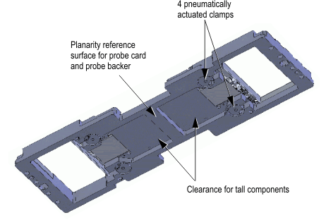
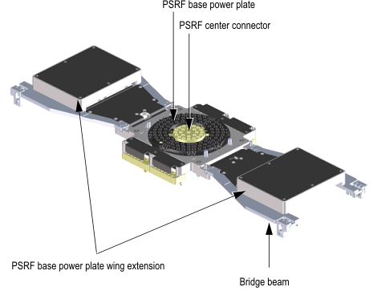

Direct-Probe PSRF tower connection specifications
Note You need the RF interface N2492A. The RF interface N2392A is not
compatible to Direct-Probe™.
For general Direct-Probe™ RF interface specifications, see Direct-Probe probe card specifications.
Note The drawings in this guide serve as conceptual descriptions only and may
differ from the latest original design drawings. For the original drawings see Direct-Probe probe card layout information and Direct-Probe stiffener.
Description |
Part number |
|---|---|
PSRF1) base tower plate (including mounted cables for 24 ports) |
N2498A |
PSRF1) base tower plate wing extension (48 RF ports, maximum 96 RF ports) |
N2498A-001 |
PSRF1) center connector |
N2494A-201 |


Functional changes
- Introduced in SmarTest 6.5.4
1) PSRF means Port Scale RF